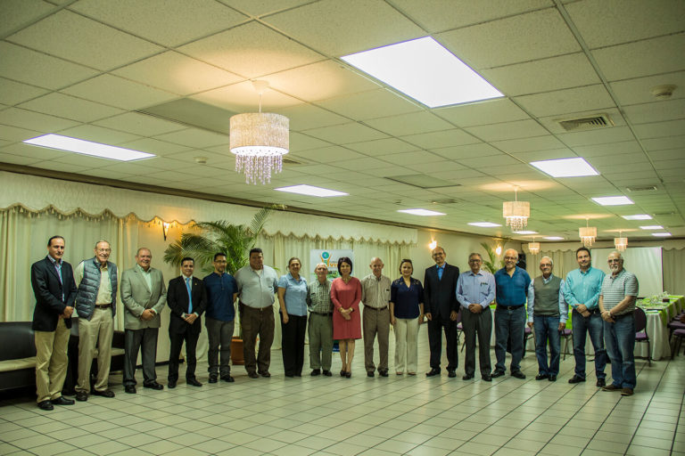

Puedes realizar donaciones directas a través de la plataforma de donaciones en línea de la Fundación Vida.
Contribuir de manera regular mediante programas de donaciones mensuales.
La fundación acepta donaciones de materiales y equipos específicos que puedan ser utilizados en sus proyectos.
Preguntar sobre las necesidades actuales para asegurarse de que las donaciones en especie sean de utilidad.
Explorar oportunidades para establecer colaboraciones a largo plazo entre la Fundación Vida y tu empresa u organización.
Apoyar proyectos específicos a través de patrocinios o asociaciones estratégicas.
Ofrecer tu tiempo y habilidades como voluntario en proyectos y actividades específicas de la Fundación Vida.
Participar en programas de voluntariado a corto o largo plazo, según tu disponibilidad.
Comunícate con la Fundación Vida para expresar tu interés en ser voluntario. Puedes hacerlo a través de su sitio web, correo electrónico o llamada telefónica.
Asistir y participar en eventos de recaudación de fondos y concienciación organizados por la Fundación Vida.
Contribuir con ideas y recursos para la planificación de eventos.
Participa en cualquier formación adicional que la Fundación Vida pueda ofrecer. Esto podría incluir talleres, seminarios o capacitaciones relacionadas con su trabajo y misión.